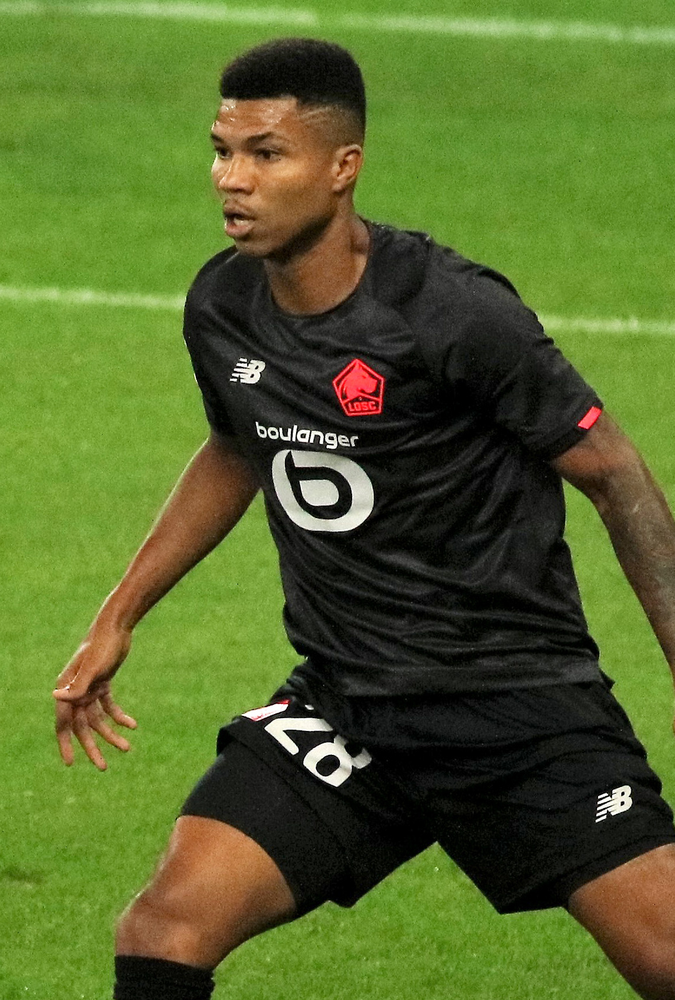

PITCHKEEP
Premier League ranks
Player File · DEF SUN · Premier #210

Reinildo Mandava
DEF · Sunderland · age 32 · £4.5m
2025/26 Premier League
| Year | Starts | Min | G | A | xG | xA | CS | GC | Bonus | YC | Sleeper | FPL |
|---|---|---|---|---|---|---|---|---|---|---|---|---|
| 2025/26 | 23 | 1966 | 0 | 2 | 0.13 | 0.62 | 6 | 27 | 6 | 7 | 64.0 | 74 |
Plus
- 64.0 Sleeper BPL 2025 points (Pitch #207).
Minus
- Consensus 233.33 vs Sleeper #207 — the industry is cooler than last year's box score.
- Board spread 169–288 (RotoWire GW1 to RotoWire Fantrax / Sleeper 400).
PitchKeep Take · The Premier
Reinildo Mandava is a defender for Sunderland, age 32, £4.5m. The Premier ranks him 210th overall by splitting Sleeper BPL 2025 (#207, 64.0 points) with the consensus of 3 other boards (233.33). Last year's Sleeper line ran 26 spots ahead of the expert/FPL mix. The third list keeps some of that production bump and refuses to throw the other boards out. That is the whole point of not just republishing The Pitch.
The 2025/26 Premier League line is 23 starts and 1966 minutes, 0 goals and 2 assists, 6 clean sheets, 27 goals against, 39 tackles and 125 CBI. Official FPL scored it at 74 points (3.0 per match) with 6 bonus. Sleeper's table turned the same counting stats into 64.0. Defenders get 10 a goal, 7 an assist, 6 a clean sheet, and −2 a goal against. CBI at 0.4 and tackles at 1 are how a centre-back cracks the overall 50.
Underlying: 0.13 xG, 0.62 xA, 0.75 xGI. The defensive events are the floor: 39 tackles, 125 clearances/blocks/interceptions, 6 shutouts. Sleeper is built to notice that. ICT and xGI boards are not, which is why a centre-back's spread on this desk is usually ugly and still informative. The friendliest board is RotoWire GW1 at 169; the coldest is RotoWire Fantrax / Sleeper 400 at 288.
Market: £4.5m, 7 boards on the file. Price is the FPL tax, not the rank. The Premier is who produced and who the boards still believe. FPL's own EP-next is 1.7. ICT 54.7.
Instruction: he is on the 400, which is already a statement, and he is not a star. Stash in Sleeper if the minutes are real. Do not let a Pitch screenshot make you start him over a Premier top-80. Nearby on The Premier: Omari Hutchinson, Ryan Sessegnon, Dwight McNeil. Versus The Pitch (Sleeper-only #207), the hybrid moves him down to #210. That move is the third list doing its job.
He is 32, which on this desk is neither a dart nor a warning label. Prime-age defenders get ranked on what they just did and whether Sunderland still gives them the ball. 1966 minutes says yes. The 2026/27 FPL price (£4.5m) is the app's guess at whether that continues. The Premier is the blend of that guess and the box score.
Full-backs and centre-backs separate on this desk by attacking events. 0 goals and 2 assists are how a defender outruns his GA column. Without those, you are betting 6 clean sheets and the CBI stream (125) against 27 goals against at −2 a piece. Sunderland's 2026/27 defensive shape is therefore half of this player's rank. The other half already happened, across 23 starts.
How to use the file: The Pitch is the Sleeper-only 400 (he is #207 there). The Premier is the 50/50 with every other board we track. Attack, Midfield, Defence, and Keepers re-rank the same Sleeper table by position. BK Value on this page follows The Premier when you are on the hybrid calculator and The Pitch when you are on the Sleeper calculator. Same curve either way — 12,000 at 1.01. 7 yellows are a real Sleeper tax. Unranked sources are skipped, never treated as 999, which is why a player missing from Yahoo's XI is not secretly ranked 400th.
Sleeper vs FPL
Same 2025/26 line, two scoring tables
Board graph
Spread 169–288 · 7 sources
Tape · 2025/26 Premier League
Reinildo Mandava sent off against Aston Villa for violent conduct | Premier League | NBC Sports
Every Board
Spread 169–288 · 7 sources
| Source | Rank |
|---|---|
| RotoWire GW1 | 169 |
| FPL 2025/26 Points | 183 |
| Sleeper BPL 2025 | 207 |
| FPL ICT Index | 236 |
| RotoWire FPL 400 | 243 |
| FPL xGI | 285 |
| RotoWire Fantrax / Sleeper 400 | 288 |
All players · The Premier · The Pitch · PK News · Calculator